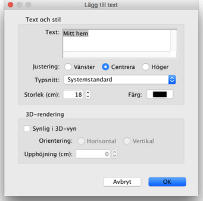

|
|
L�gga till text | ||
|
F�r att l�gga till textetiketter till hemmets planl�sning m�ste du f�rst v�lja Planl�sning > L�gg till text eller v�lja L�gg till text-verktyget.
F�r att l�gga till en ny text klickar du p� dess plats p� hemmets planl�sning, skriv sedan in texten i dialogrutan som dyker upp enligt nedan:  N�r textetiketten skapats kan du �ndra dess text och stil med menyalternativen tillg�ngliga i undermenyn Planl�sning > �ndra textstil. Du kan ocks� �ndra dess text, typsnitt, f�rg och 3D-rendering genom att v�lja menyn Planl�sning > �ndra text. Genom att v�lja Synlig i 3D-vyn i �ndringsdialogens kryssruta dyker texten upp i 3D-vyn ocks�, antingen med horisontal eller vertikal orientering.
F�r att sluta l�gga till texter v�ljer du Planl�sning > V�lj eller V�lj-verktyget (eller ett annat verktyg).
I Markera-l�get kan du rotera en markerad text med dess indikator, eller dubbelklicka p� den f�r att visa dess �ndringsdialog. |


|